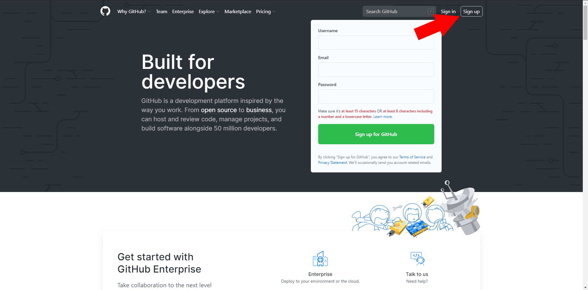
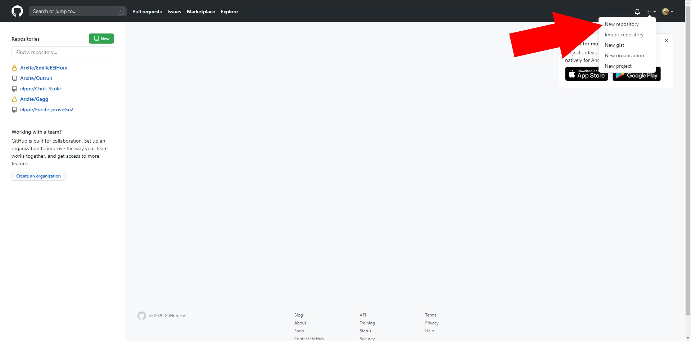
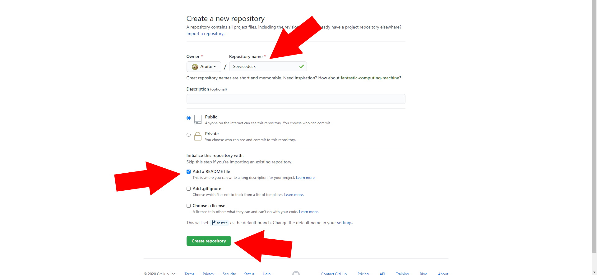
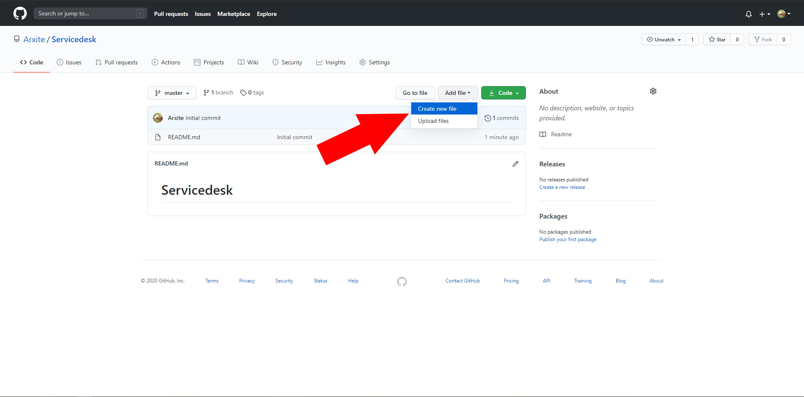
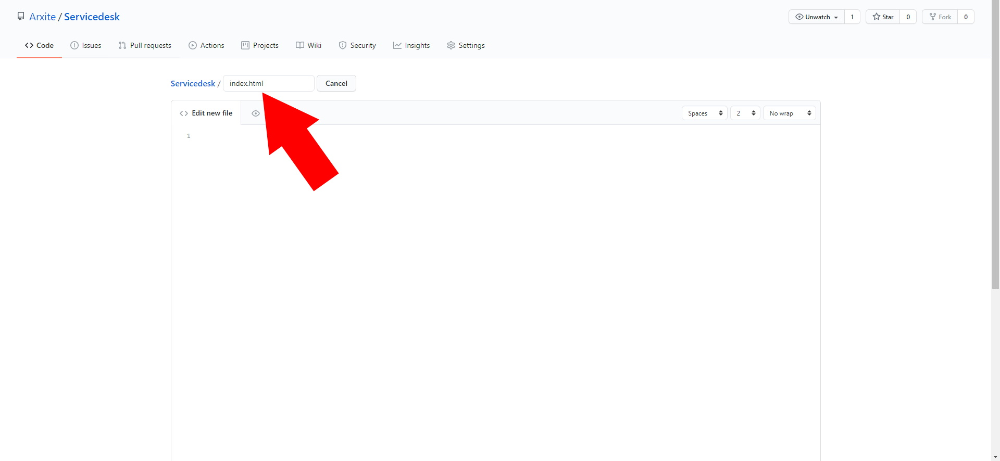
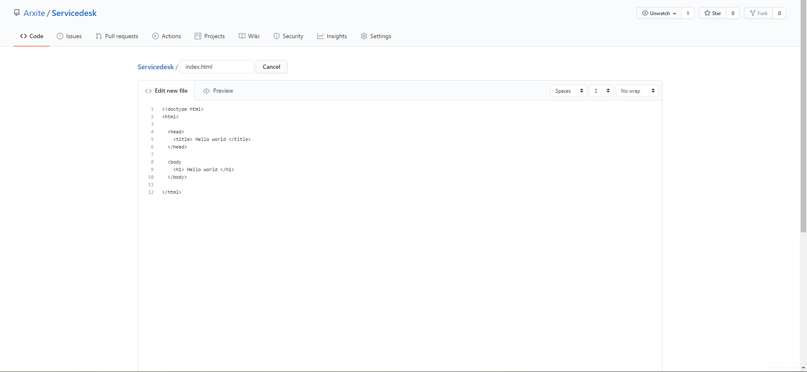
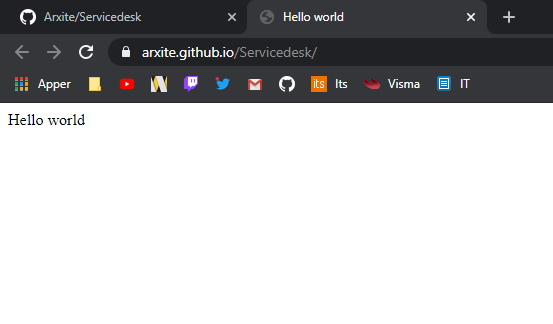
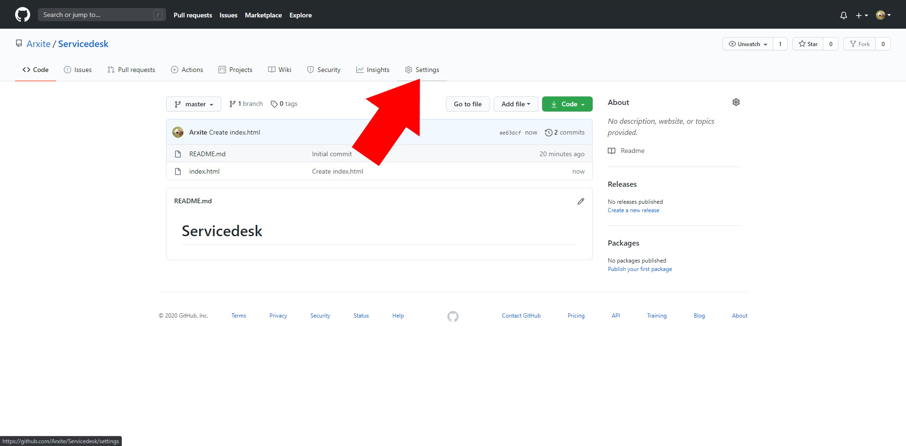
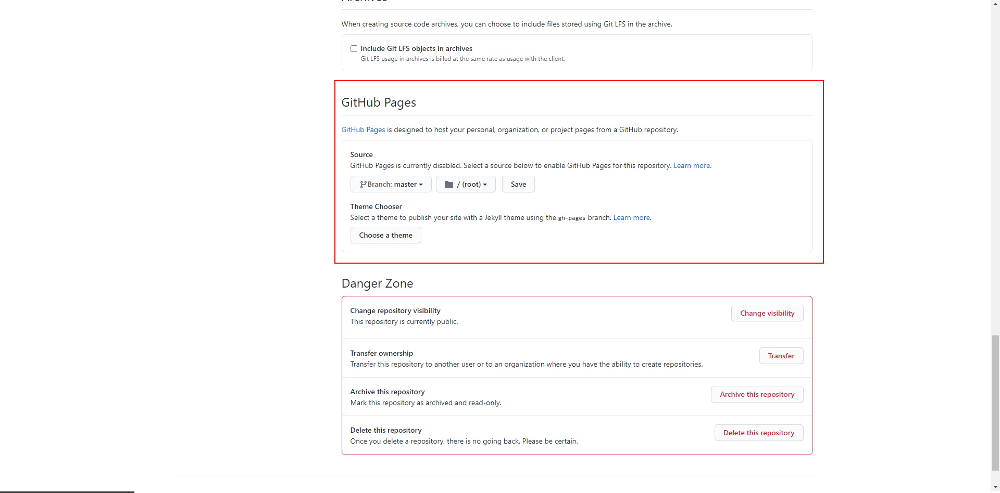

Lag din første github bruker og nettside
- Det første du trenger å gjøre for å lage en account på github er å gå til www.github.com å klikke på sign up oppe til høyre for å lage en bruker.

- Så klikker du på plussen oppe til høyre også klikker du på "New repository".

- Velg et navn til repository og klikk "Add a README file" også klikker du på create repository.

- Klikk på "Add file" også kall filen for "index.html". Dette vil være den første nettsiden som blir lastet når du går til nettsiden.


- Her har du koden til en enkel nettside i index.html

Nettsiden vil se slik ut.

- Gå til settings å gå nesten helt neders til "Github pages". Her velger du branchen "Master" å trykker Save. Etter en liten stund vil nettsiden din være oppe. linken vil være rett over save knappe.


- Gratulerer nå har du laget din første nettside.
Tilbake